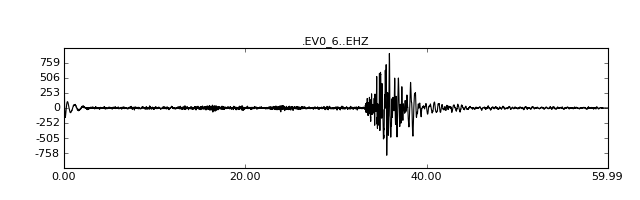
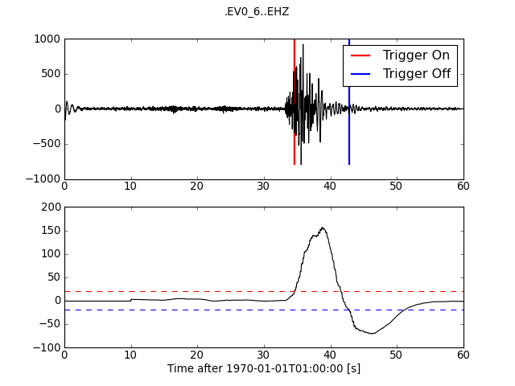
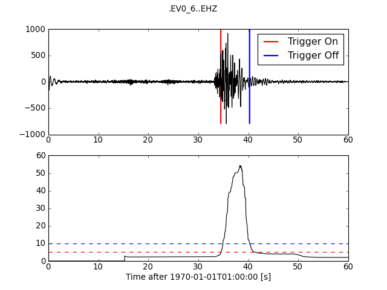
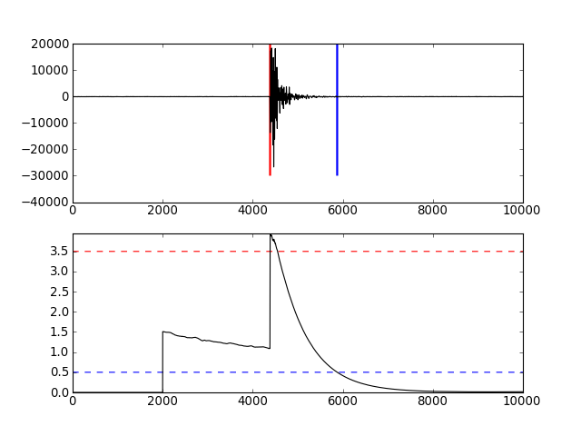

11. Trigger/Picker Tutorial¶
This is a small tutorial that started as a practical for the UNESCO short course on triggering. Test data used in this tutorial can be downloaded here: trigger_data.zip.
The triggers are implemented as described in [Withers1998]. Information on finding the right trigger parameters for STA/LTA type triggers can be found in [Trnkoczy2012].
See also
Please note the convenience method of ObsPy’s Stream.trigger and Trace.trigger objects for triggering.
11.1. Reading Waveform Data¶
The data files are read into an ObsPy Trace object using the read() function.
>>> from obspy.core import read
>>> st = read("http://examples.obspy.org/ev0_6.a01.gse2")
>>> st = st.select(component="Z")
>>> tr = st[0]
The data format is automatically detected. Important in this tutorial are the Trace attributes:
- tr.data
- contains the data as numpy.ndarray
- tr.stats
- contains a dict-like class of header entries
- tr.stats.sampling_rate
- the sampling rate
- tr.stats.npts
- sample count of data
As an example, the header of the data file is printed and the data are plotted like this:
>>> print tr.stats
network:
station: EV0_6
location:
channel: EHZ
starttime: 1970-01-01T01:00:00.000000Z
endtime: 1970-01-01T01:00:59.995000Z
sampling_rate: 200.0
delta: 0.005
npts: 12000
calib: 1.0
_format: GSE2
gse2: AttribDict({'instype': ' ', 'datatype': 'CM6', 'hang': 0.0, 'auxid': ' ', 'vang': -1.0, 'calper': 1.0})
Using the plot() method of the Trace objects will show the plot.
>>> tr.plot(type="relative")
[source code, hires.png, pdf]


11.2. Available Methods¶
After loading the data, we are able to pass the waveform data to the following trigger routines defined in obspy.signal.trigger:
recSTALTA(a, nsta, nlta) Recursive STA/LTA. carlSTATrig(a, nsta, nlta, ratio, quiet) Computes the carlSTATrig characteristic function. classicSTALTA(a, nsta, nlta) Computes the standard STA/LTA from a given input array a. The length of delayedSTALTA(a, nsta, nlta) Delayed STA/LTA. zDetect(a, nsta) Z-detector. pkBaer(reltrc, samp_int, tdownmax, tupevent, ...) Wrapper for P-picker routine by M. Baer, Schweizer Erdbebendienst. arPick(a, b, c, samp_rate, f1, f2, lta_p, ...) Return corresponding picks of the AR picker
Help for each function is available HTML formatted or in the usual Python manner:
>>> from obspy.signal.trigger import classicSTALTA
>>> help(classicSTALTA)
Help on function classicSTALTA in module obspy.signal.trigger...
The triggering itself mainly consists of the following two steps:
- Calculating the characteristic function
- Setting picks based on values of the characteristic function
11.3. Trigger Examples¶
For all the examples, the commands to read in the data and to load the modules are the following:
>>> from obspy.core import read
>>> from obspy.signal.trigger import plotTrigger
>>> trace = read("http://examples.obspy.org/ev0_6.a01.gse2")[0]
>>> df = trace.stats.sampling_rate
11.3.1. Classic Sta Lta¶
>>> from obspy.signal.trigger import classicSTALTA
>>> cft = classicSTALTA(trace.data, int(5 * df), int(10 * df))
>>> plotTrigger(trace, cft, 1.5, 0.5)
[source code, hires.png, pdf]


11.3.2. Z-Detect¶
>>> from obspy.signal.trigger import zDetect
>>> cft = zDetect(trace.data, int(10 * df))
>>> plotTrigger(trace, cft, -0.4, -0.3)
[source code, hires.png, pdf]


11.3.3. Recursive Sta Lta¶
>>> from obspy.signal.trigger import recSTALTA
>>> cft = recSTALTA(trace.data, int(5 * df), int(10 * df))
>>> plotTrigger(trace, cft, 1.2, 0.5)
[source code, hires.png, pdf]


11.3.4. Carl-Sta-Trig¶
>>> from obspy.signal.trigger import carlSTATrig
>>> cft = carlSTATrig(trace.data, int(5 * df), int(10 * df), 0.8, 0.8)
>>> plotTrigger(trace, cft, 20.0, -20.0)
[source code, hires.png, pdf]


11.3.5. Delayed Sta Lta¶
>>> from obspy.signal.trigger import delayedSTALTA
>>> cft = delayedSTALTA(trace.data, int(5 * df), int(10 * df))
>>> plotTrigger(trace, cft, 5, 10)
[source code, hires.png, pdf]


11.4. Network Coincidence Trigger Example¶
In this example we perform a coincidence trigger on a local scale network of 4 stations. For the single station triggers a recursive STA/LTA is used. The waveform data span about four minutes and include four local events. Two are easily recognizable (Ml 1-2), the other two can only be detected with well adjusted trigger settings (Ml <= 0).
First we assemble a Stream object with all waveform data, the data used in the example is available from our web server:
>>> from obspy.core import Stream, read
>>> st = Stream()
>>> files = ["BW.UH1..SHZ.D.2010.147.cut.slist.gz",
... "BW.UH2..SHZ.D.2010.147.cut.slist.gz",
... "BW.UH3..SHZ.D.2010.147.cut.slist.gz",
... "BW.UH4..SHZ.D.2010.147.cut.slist.gz"]
>>> for filename in files:
... st += read("http://examples.obspy.org/" + filename)
After applying a bandpass filter we run the coincidence triggering on all data. In the example a recursive STA/LTA is used. The trigger parameters are set to 0.5 and 10 second time windows, respectively. The on-threshold is set to 3.5, the off-threshold to 1. In this example every station gets a weight of 1 and the coincidence sum threshold is set to 3. For more complex network setups the weighting for every station/channel can be customized. We want to keep our original data so we work with a copy of the original stream:
>>> st.filter('bandpass', freqmin=10, freqmax=20) # optional prefiltering
>>> from obspy.signal import coincidenceTrigger
>>> st2 = st.copy()
>>> trig = coincidenceTrigger("recstalta", 3.5, 1, st2, 3, sta=0.5, lta=10)
Using pretty print the results display like this:
>>> from pprint import pprint
>>> pprint(trig)
[{'coincidence_sum': 4.0,
'duration': 4.5299999713897705,
'stations': ['UH3', 'UH2', 'UH1', 'UH4'],
'time': UTCDateTime(2010, 5, 27, 16, 24, 33, 190000),
'trace_ids': ['BW.UH3..SHZ', 'BW.UH2..SHZ', 'BW.UH1..SHZ',
'BW.UH4..SHZ']},
{'coincidence_sum': 3.0,
'duration': 3.440000057220459,
'stations': ['UH2', 'UH3', 'UH1'],
'time': UTCDateTime(2010, 5, 27, 16, 27, 1, 260000),
'trace_ids': ['BW.UH2..SHZ', 'BW.UH3..SHZ', 'BW.UH1..SHZ']},
{'coincidence_sum': 4.0,
'duration': 4.7899999618530273,
'stations': ['UH3', 'UH2', 'UH1', 'UH4'],
'time': UTCDateTime(2010, 5, 27, 16, 27, 30, 490000),
'trace_ids': ['BW.UH3..SHZ', 'BW.UH2..SHZ', 'BW.UH1..SHZ',
'BW.UH4..SHZ']}]
With these settings the coincidence trigger reports three events. For each (possible) event the start time and duration is provided. Furthermore, a list of station names and trace IDs is provided, ordered by the time the stations have triggered, which can give a first rough idea of the possible event location. We can request additional information by specifying details=True:
>>> st2 = st.copy()
>>> trig = coincidenceTrigger("recstalta", 3.5, 1, st2, 3, sta=0.5, lta=10,
... details=True)
For clarity, we only display information on the first item in the results here:
>>> pprint(trig[0])
{'cft_peak_wmean': 19.561900329259956,
'cft_peaks': [19.535644192544272,
19.872432918501264,
19.622171410201297,
19.217352795792998],
'cft_std_wmean': 5.4565629691954713,
'cft_stds': [5.292458320417178,
5.6565387957966404,
5.7582248973698507,
5.1190298631982163],
'coincidence_sum': 4.0,
'duration': 4.5299999713897705,
'stations': ['UH3', 'UH2', 'UH1', 'UH4'],
'time': UTCDateTime(2010, 5, 27, 16, 24, 33, 190000),
'trace_ids': ['BW.UH3..SHZ', 'BW.UH2..SHZ', 'BW.UH1..SHZ', 'BW.UH4..SHZ']}
Here, some additional information on the peak values and standard deviations of the characteristic functions of the single station triggers is provided. Also, for both a weighted mean is calculated. These values can help to distinguish certain from questionable network triggers.
For more information on all possible options see the documentation page for coincidenceTrigger().
11.5. Picker Examples¶
11.5.1. Baer Picker¶
For pkBaer(), input is in seconds, output is in samples.
>>> from obspy.core import read
>>> from obspy.signal.trigger import pkBaer
>>> trace = read("http://examples.obspy.org/ev0_6.a01.gse2")[0]
>>> df = trace.stats.sampling_rate
>>> p_pick, phase_info = pkBaer(trace.data, df,
... 20, 60, 7.0, 12.0, 100, 100)
>>> print(p_pick)
6894
>>> print(phase_info)
EPU3
>>> print(p_pick / df)
34.47
This yields the output 34.47 EPU3, which means that a P pick was set at 34.47s with Phase information EPU3.
11.5.2. AR Picker¶
For arPick(), input and output are in seconds.
>>> from obspy.core import read
>>> from obspy.signal.trigger import arPick
>>> tr1 = read('http://examples.obspy.org/loc_RJOB20050801145719850.z.gse2')[0]
>>> tr2 = read('http://examples.obspy.org/loc_RJOB20050801145719850.n.gse2')[0]
>>> tr3 = read('http://examples.obspy.org/loc_RJOB20050801145719850.e.gse2')[0]
>>> df = tr1.stats.sampling_rate
>>> p_pick, s_pick = arPick(tr1.data, tr2.data, tr3.data, df,
... 1.0, 20.0, 1.0, 0.1, 4.0, 1.0, 2, 8, 0.1, 0.2)
>>> print(p_pick)
30.6350002289
>>> print(s_pick)
31.2800006866
This gives the output 30.6350002289 and 31.2800006866, meaning that a P pick at 30.64s and an S pick at 31.28s were identified.
11.6. Advanced Example¶
A more complicated example, where the data are retrieved via ArcLink and results are plotted step by step, is shown here:
from obspy.core import UTCDateTime
from obspy.arclink import Client
from obspy.signal.trigger import recSTALTA, triggerOnset
import matplotlib.pyplot as plt
# Retrieve waveforms via ArcLink
client = Client(host="erde.geophysik.uni-muenchen.de", port=18001)
t = UTCDateTime("2009-08-24 00:19:45")
st = client.getWaveform('BW', 'RTSH', '', 'EHZ', t, t + 50)
# For convenience
tr = st[0] # only one trace in mseed volume
df = tr.stats.sampling_rate
# Characteristic function and trigger onsets
cft = recSTALTA(tr.data, int(2.5 * df), int(10. * df))
on_of = triggerOnset(cft, 3.5, 0.5)
# Plotting the results
ax = plt.subplot(211)
plt.plot(tr.data, 'k')
ymin, ymax = ax.get_ylim()
plt.vlines(on_of[:, 0], ymin, ymax, color='r', linewidth=2)
plt.vlines(on_of[:, 1], ymin, ymax, color='b', linewidth=2)
plt.subplot(212, sharex=ax)
plt.plot(cft, 'k')
plt.hlines([3.5, 0.5], 0, len(cft), color=['r', 'b'], linestyle='--')
plt.axis('tight')
plt.show()
[source code, hires.png, pdf]

